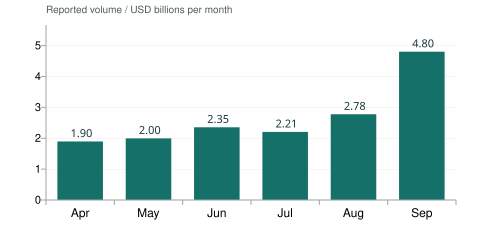

Investment research · November 2026
Beyond the
growth story.
What does a growing cross-chain business mean for the NEAR token?
Commercial activity has expanded. Lasting token demand remains conditional. Follow the argument, inspect the evidence, and test the assumptions yourself.
The business has grown.
Reported Intents volume- April 2026
- $1.90bn
- September 2026
- $4.80bn

Activity is measured. Its durable link to token demand is still being tested.
Thesis
The investment case, counterargument and conditions that would change our view.
Explore data
Dune context, dated snapshots and a traceable path to the underlying evidence.
Scenario lab
Change the economics. See what reaches the token under your assumptions.
Report
The complete findings, methodology and limitations in a downloadable PDF.